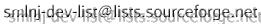

This page provides pointers to the SML/NJ software distributions and installation instructions.
Current Release
The current release of SML/NJ is Version 110, originally introduced in February 1998. Version 110 runs under Unix, Windows 95 or Windows NT. (The the current release version number is 110.0.7, representing the 7th patch release of 110, but we will refer to this version as 110 for short. )
Installation Instructions
To download and install SML/NJ 110, follow these installation instructions.
The files making up the Version 110 distribution are available via http from this index page.The Distribution Files
Previous Releases
Version 0.93 (released in 1993) is still available but is obsolete and no longer supported. It is mainly of historical interest for code archeology.Working Versions
Working versions are created for internal development purposes and vary in reliability and stability. Most are robust enough for noncritical research use, others are not. Please pay careful attention to the README or NEWS file for each version before attempting to use it. Current and recent working versions are listed in the Working Versions index, which gives access to README files for recent working versions and the ftp directories for working versions that are currently available for downloading. The installation instructions for the release version will generally work, mutatis mutandis, for working versions.We generally announce new versions (including working versions) on comp.lang.ml, comp.lang.functional, freshmeat.net, and our development mailing list .
After version 110.9.1, the older "cmachine" (i.e. non-MLRISC) code generators were replaced by new MLRISC code generators, except for the MIPS architecture, which is currently not supported in the latest working version. Work on a new MIPS MLRISC code generator is in progress.
Packages
The directory
contains software packages that are not part of the core SML/NJ distribution. Currently, this directory contains:
- ckit, a C front end.
Benchmarks
A set of programs used as a "benchmark suite" for Standard ML is available by svn checkout at svn://smlnj-gforge.cs.uchicago.edu/smlnj/benchmarks.
SML/NJ Compiler Test Suites
The regression test suites used for the SML/NJ compiler are available by svn checkout at svn://smlnj-gforge.cs.uchicago.edu/smlnj/tests.
Contributed Software
Some contributed software packages can be found at (location to be determined)
Currently this directory contains:
- emacs
- The sml-mode package provides an emacs mode for editing sml code under Gnu emacs and running the sml top-level as a subprocess of emacs. Originally developed by Matthew J. Morley, it is now maintained by Stefan Monnier (monnier at iro dot umontreal dot ca). Online documentation is available here. The latest sml-mode tarball is available at http://www.iro.umontreal.ca/~monnier/elisp/.
- tools
- Various software tools, including:
- heap2exec, A "heap2exec" utility for building Unix executables from heap images and the SML/NJ runtime executable. (This replaces Lorenz Huelsbergen's original heap2exec utility.)
- lib
- Some contributed or "borrowed" libraries, including:
- Util.tar.Z, utility modules contributed by Nikolai Bjorner and Matthias Blume.
- getopt.tar.Z, a port (via Haskell) of the GNU getopt library.
Additional packages will be added as they become available. New contributions are eagerly sought!